Next: Summary of the compressible Up: The Finite Volume Method Previous: Density update Contents
Here, the two-parameter turbulence models BSL (baseline) and SST (shear stress
transport) are treated [51]. The
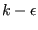 [37] and the
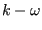-model [86] are special cases of the BSL-model. The two
parameters are the turbulent kinetic energy  and the turbulence frequency
and the turbulence frequency
 . The equation for
. The equation for  reads [51]:
reads [51]:
| 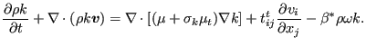 | (657) |
Since
 |
(658) |
and
 |
(659) |
one can write
| 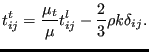 | (660) |
This leads to:
 |
(661) |
Notice that
 can be written as:
can be written as:
| 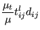 | 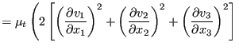 | |
![$\displaystyle + \left [ \left ( \frac{\partial v_1}{\partial x_2} + \frac{\part...
...ial v_2}{\partial x_3} + \frac{\partial v_3}{\partial x_2} \right ) ^2 \right ]$](img1957.png) |
||
| 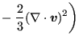 | (662) |
In the above conservation equation  is a function of
the flow characteristics through the blending factor 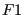 [51] and
the dynamic turbulent viscosity satisfies:
is a function of
the flow characteristics through the blending factor 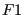 [51] and
the dynamic turbulent viscosity satisfies:
| (663) |
In fact, the BSL model is a linear combination of the model and the
-model with coefficients and  , respectively. Near a
wall tends to 1, thus favoring the -model which is
particularly good in the near-wall region, far away from a wall tends to
zero, leading to a pure
-model.
, respectively. Near a
wall tends to 1, thus favoring the -model which is
particularly good in the near-wall region, far away from a wall tends to
zero, leading to a pure
-model.
The blending factor used in iteration  is
, i.e. its
calculation is mainly based on the results from the previous iteration and satisfies
the following equations:
is
, i.e. its
calculation is mainly based on the results from the previous iteration and satisfies
the following equations:
![$\displaystyle = \tanh \left [ \left ( {{\text{arg}}_1}_P ^{(m-1)} \right ) ^4 \right ]$](img1966.png) |
(664) | |
| (665) | ||
| (666) |
where  is the distance from the element center P to the next solid surface.
is the distance from the element center P to the next solid surface.
Using the blending factor one obtains the correct parameter values, e.g.:
| 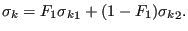 | (667) |
For completeness the parameters are listed here:
| 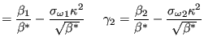 | (668) | |
| 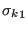 | (669) | |
| 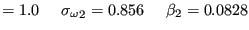 | (670) | |
| 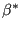 | (671) |
In the conservation equation for k one very easily identifies the time-dependent, convective, diffusive and body terms. They are treated in a completely analogous way to the energy equation. The convective boundary conditions amount to:
For the convective interpolation of  the modified smart algorithm has not
shown any advantages, therefore, the upwind difference scheme is always used.
the modified smart algorithm has not
shown any advantages, therefore, the upwind difference scheme is always used.
The diffusion boundary conditions are:
| 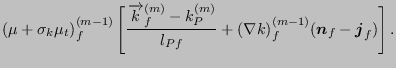 | (672) |
 is known (cf. convective inlet boundary conditions), and
is known (cf. convective inlet boundary conditions), and
 |
(673) |
Notice that no facial values are calculated for the turbulent
parameters. Therefore,
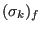 in the above equation is approximated
by
 .
.
| (674) |
![$\displaystyle \mu_f ^{(m-1)} \left [ \frac{ - k_P ^{(m)} }{l_{Pf}}+ (\nabla k)_f ^{(m-1)} (\boldsymbol{n}_f - \boldsymbol{j}_f) \right ].$](img1992.png) |
(675) |
The source terms are treated in the following way:
![$\displaystyle \int_{V}^{} \left[ \frac{\mu_t}{\mu } t_{ij}^l d_{ij} \right ] dV \approx V_P \left [ \frac{\mu_t}{\mu } t_{ij}^l d_{ij} \right ]_P ^{(m-1)},$](img1993.png) |
(676) |
in which the term in brackets depends on
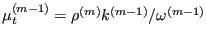 and
 only,
cf. Equation (662). It can be split in a sum of
only,
cf. Equation (662). It can be split in a sum of
![$\displaystyle V_P {\mu_t}_P ^{(m-1)} \left [ \frac{t_{ij}^l d_{ij}}{\mu } + \frac{2}{3} d_{kk}^2 \right ]_P ^{(m)},$](img1996.png) |
(677) |
which is positive and corresponds to a source (treated explicitly, i.e. on the right hand side) and
| 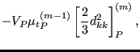 | (678) |
 |
(679) |
or
 |
(680) |
respectively.
 |
(681) |
This term is treated implicitly ( is evaluated at iteration
is evaluated at iteration  and
the term ends up on the left hand side) since it is a negative source.
and
the term ends up on the left hand side) since it is a negative source.
The equation for the turbulence frequency  runs [51]:
runs [51]:
 |
(682) |
which can be rewritten as:
 |
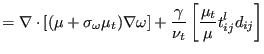 | |
 |
(683) |
One easily recognizes the time-dependent, convective, diffusive and source terms. The convective boundary conditions amount to:
For the convective interpolation of  the modified smart algorithm has not
shown any advantages, therefore, the upwind difference scheme is always used.
the modified smart algorithm has not
shown any advantages, therefore, the upwind difference scheme is always used.
The diffusion boundary conditions are:
![$\displaystyle (\mu + \sigma_\omega \mu_t)_f ^{(m-1)} \left [ \frac{\omega _f ^{...
...}}+ (\nabla \omega )_f ^{(m-1)} (\boldsymbol{n}_f - \boldsymbol{j}_f) \right ].$](img2010.png) |
(684) |
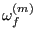 is known (cf. convective inlet boundary conditions), and
 |
(685) |
Notice that no facial values are calculated for the turbulent
parameters. Therefore,
 in the above equation is approximated
by
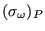.
in the above equation is approximated
by
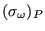.
| (686) |
 |
(687) |
where
 and
and
 is the distance to the next point away
from the wall; same treatment as for inlet (notice, however, hat 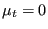
at the wall).
is the distance to the next point away
from the wall; same treatment as for inlet (notice, however, hat 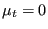
at the wall).
The source terms are treated as follows:
| 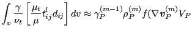 | (688) |
where
 is the term in the outer brackets
on the right hand side of Equation (653). Part of this term goes to
the right hand side (sources) and part to the left hand side (sinks) as
discussed extensively for the energy equation.
is the term in the outer brackets
on the right hand side of Equation (653). Part of this term goes to
the right hand side (sources) and part to the left hand side (sinks) as
discussed extensively for the energy equation.
| 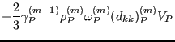 | (689) |
if
 (sink) and by
(sink) and by
| 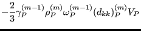 | (690) |
if
 (source).
(source).
| (691) |
 |
(692) |
if the term is positive (source), and by:
| 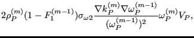 | (693) |
if the term is negative (sink).